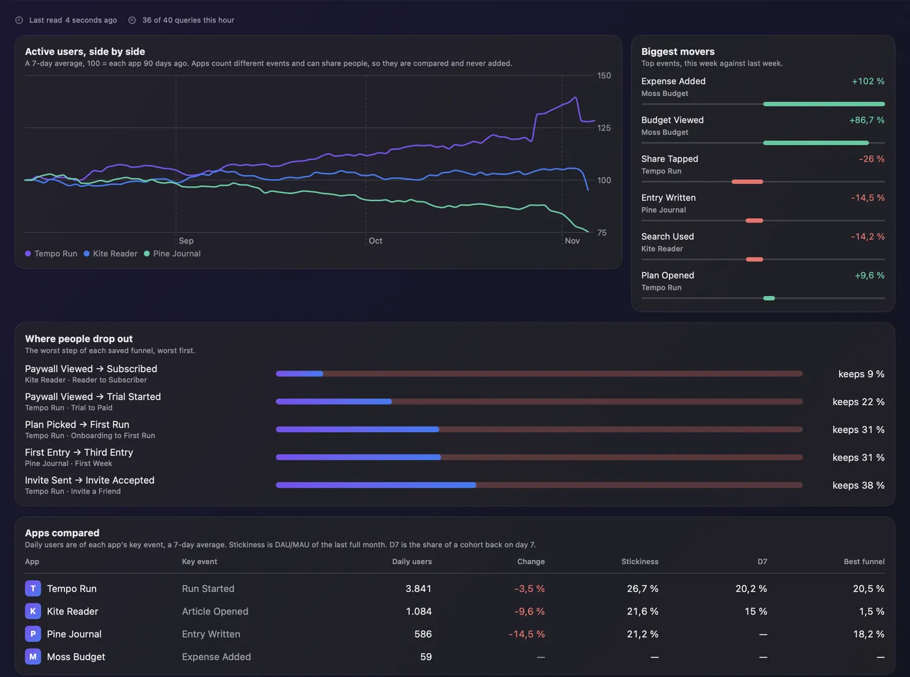
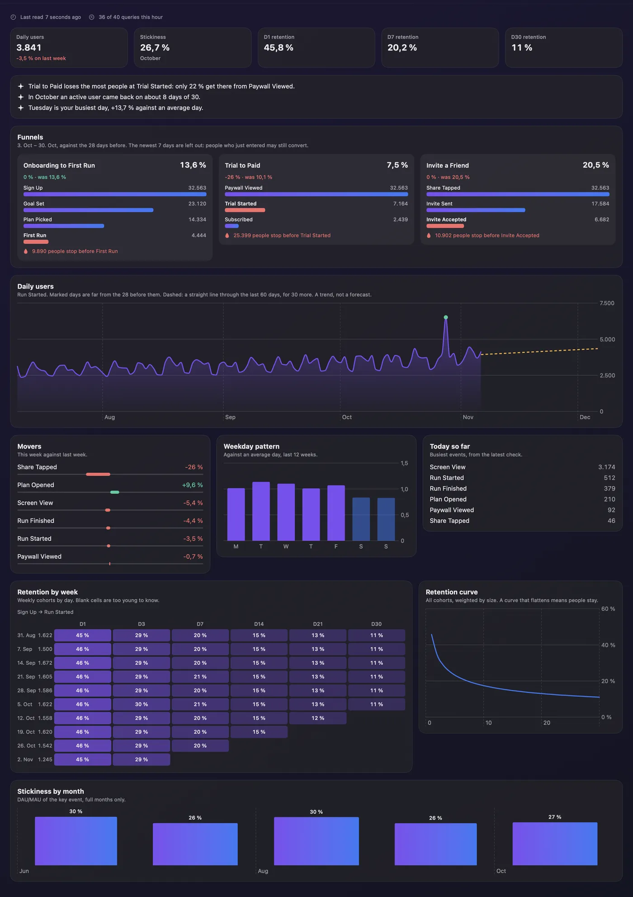
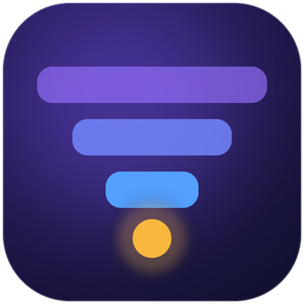

Projects side by side
Each app with its own key event. Numbers are never added across projects: apps count different events and can share people.
| App | Key event | Daily users | Change | Stickiness | D7 | Best funnel |
|---|
FunnelRadar sits in your Mac's menu bar and reads your Mixpanel projects: funnel leaks, retention, stickiness and unusual days, side by side.
What it adds over Mixpanel's panels
Where do people drop out, who comes back, and did anything strange happen yesterday? Your projects side by side, without clicking through panels. The numbers below are made up.
Each app with its own key event. Numbers are never added across projects: apps count different events and can share people.
| App | Key event | Daily users | Change | Stickiness | D7 | Best funnel |
|---|
The worst step of up to three saved funnels per project, worst first, with overall conversion against the period before.
From a pair of events you pick. A curve that flattens means people stay.
Weekly cohorts by day. Blank cells are too young to know, so they never pull an average down.
Each app as an index, so apps of any size can share one chart.
Your top events, this week against last week.
Days far from the 28 before them get marked. Today is partial and would always look like a dip, so nothing is worked out from it.
Each weekday against an average day, over the last 12 weeks.
DAU/MAU of your key event, per full month, using Mixpanel's own monthly uniques.
The Query API allows 60 queries an hour and 5 at once, shared with everything else on the project. FunnelRadar takes a small part of that, on a schedule.
In the app


Screenshots use FunnelRadar's made-up demo apps.
Alerts
Notifications on your Mac with your own thresholds, each one once.
Remote Code on iPhone
Remote Code brings FunnelRadar to your iPhone and iPad as a tab.
Install FunnelRadar and switch it on in Remote Code's settings, on the Mac or the iPhone.
Remote Code starts FunnelRadar's hub on the Mac when the app isn't running. Two engines never share the query budget.
The hub listens on 127.0.0.1 only, its token is in a 0600 file, and the phone reaches it over Remote Code's encrypted link.
Setup
FunnelRadar reads your data through mp, Mixpanel's official open-source CLI, and installs a pinned version into its own folder, about 300 MB. That needs Python 3.10 or newer; it uses uv if you have it, then your python3, then Homebrew.
Your browser opens Mixpanel, and mp keeps the sign-in in FunnelRadar's folder, apart from any mp you use in a terminal. A service account works too.
Pick the projects to follow, then each one's key event and retention events in Settings. The first full read takes about a minute per app.
Optional. Turn on the alerts you want and set your thresholds.
Privacy
Your data travels between your Mac and Mixpanel through the official CLI. FunnelRadar has no server, no account of its own and no analytics.
mp can create dashboards, change flags and delete things. FunnelRadar's source protocol only has reads, so a mistake can't touch your account.
There is nothing to sign up for, and nothing of yours on a server of ours. There is no such server.
mp does the sign-in and token refresh, in FunnelRadar's own folder. Signing out here doesn't touch an mp you use in a terminal.
A service account's secret stays in your Keychain and reaches mp through its environment, never a config file.
FunnelRadar makes no other requests, apart from installing mp during setup and the update check.
Everything is kept in ~/Library/Application Support/FunnelRadar, in folders only you can read.

Free and open source, under the MIT license.
macOS 15 Sequoia or later · a Mixpanel account
Or with Homebrew:
brew tap ardasnturk/funnelradar https://github.com/ardasnturk/funnelradar
brew install --cask funnelradarFree Mac apps that work together.
Try it without an account:
open -a FunnelRadar --args --demoFAQ
macOS 15 or newer and a Mixpanel account. FunnelRadar itself is free.
No. mp can change things, but FunnelRadar's source protocol has no way to ask it to.
It stays at 40 queries an hour or fewer, one at a time, and counts them across restarts. A full read of one app is about a dozen queries, so above about three apps the first read spreads over more than an hour. A 429 stops the read and it waits.
That's mp, which FunnelRadar installs at a pinned version into its own folder, so nothing else on your Mac changes. The CLI is a pre-release and a new version may change its output.
Yes, on one small live project: sign-in, projects, events, retention and the hub work. Reading funnels hasn't been tried on real data yet, because that project has none saved. If a number looks wrong, please open an issue.
Someone who entered a funnel yesterday may still convert, so a period ending yesterday always looks worse. Both 28-day periods stop 7 days before the last full day, which delays a real fall by a week.
Projects count different key events and can share people, so a total would mean nothing. The overview compares them as an index instead.
Yes. Run open -a FunnelRadar --args --demo to open it with made-up apps.
Only for the iPhone and iPad. FunnelRadar works on its own on the Mac.
Quit FunnelRadar and delete it (or brew uninstall --zap --cask funnelradar). Remove ~/Library/Application Support/FunnelRadar for a clean slate.
No. FunnelRadar is an independent project that uses Mixpanel's official CLI. It is not affiliated with or endorsed by Mixpanel.